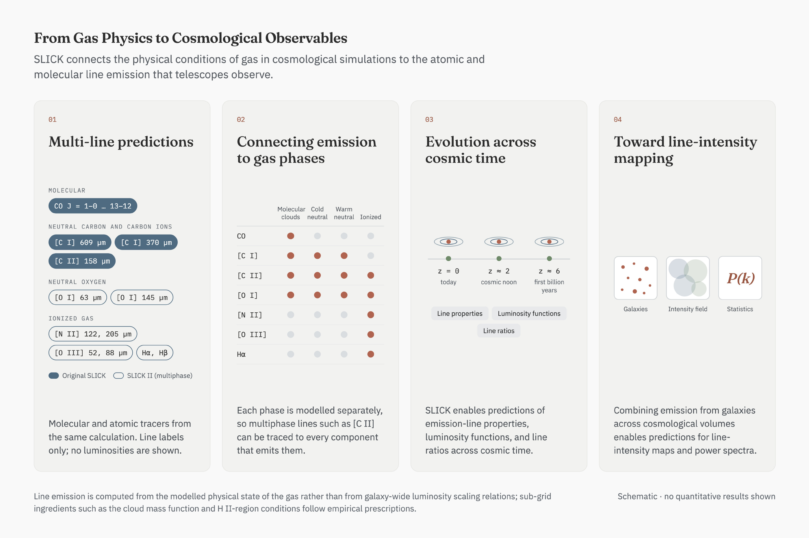

← Back to Research & Publications
SLICK: From Gas Physics to Observable Galaxies
How do we predict the light emitted by galaxies when the physical processes that produce it occur on scales far smaller than cosmological simulations can resolve?
I developed SLICK (Scalable Line Intensity Computation Kit) to help bridge this gap. The framework connects the physical state of gas in simulated galaxies to their atomic and molecular emission lines, providing a way to investigate how the interstellar medium shapes the observables we measure across cosmic time.
How SLICK Works
SLICK starts with gas in cosmological hydrodynamical simulations, models its unresolved interstellar medium, and calculates line emission using physical models of gas chemistry, heating, cooling, and radiative transfer. These calculations connect individual gas components to galaxy-integrated luminosities.

What SLICK Enables
Rather than prescribing line luminosities solely from galaxy-wide scaling relations, SLICK uses the modeled physical conditions of gas to predict emission. The original framework and ongoing SLICK-2 extensions open the door to multi-line studies of galaxies and their evolution.

Current Developments
Building on the published SLICK framework, my ongoing research extends its physical scope and explores how emission lines can probe galaxy evolution and cosmological structure.
SLICK-2
Expanding multi-line predictions across molecular, neutral, and ionized gas components in cosmological simulations.
AGN & Molecular Gas
Investigating how radiation from active galactic nuclei changes the physical state of gas and its line emission.
Line-Intensity Mapping
Connecting simulated galaxy emission to large-scale observables such as line-intensity maps and power spectra.
Publications & Resources
- Garcia, K., Narayanan, D., Popping, G., Anirudh, R., Sutherland, S., & Kaasinen, M. (2024). SLICK: Modeling a Universe of Molecular Line Luminosities in Hydrodynamical Simulations. The Astrophysical Journal, 974, 197.
- Garcia, K. et al. SLICK-2: Modeling Multi-Line Interstellar Medium Emission Across Cosmological Volumes. Manuscript in preparation (working title).